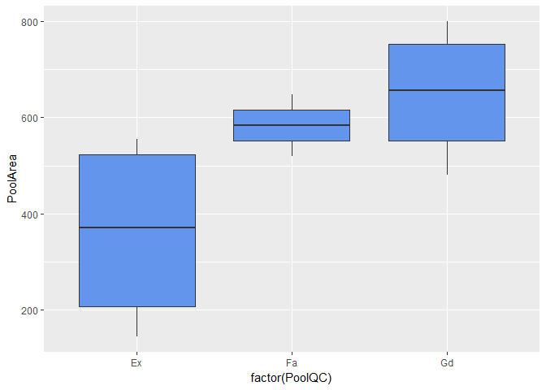
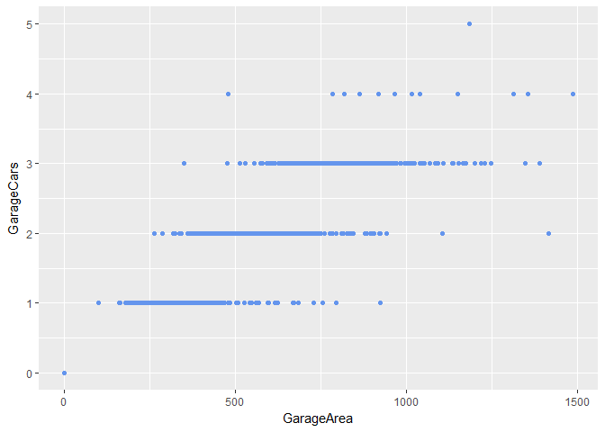

House prices: part one Supporting tagline
Overview
In the following few posts I will be doing simple exploratory data analysis of the Ames Housing dataset used in the Kaggle competition House Prices: Advanced Regression Techniques. In later posts, I will go on to run statistical models on the data. This is my first blog post here so it’s also an exercise in creating blog posts!
The problem is to try to correctly predict the house prices in the test dataset by training a regression model on the training data.
I will soon do an exploratory data analysis of the data, however to begin with, the data should be cleaned. In particular, the empty values should be filled in.
First, let’s load the data.
library(dplyr)
library(ggplot2)
library(reshape2)
train <- read.csv('train.csv', stringsAsFactors = F)
test <- read.csv('test.csv', stringsAsFactors = F)
Columns
Here are the columns available in the dataset:
names(train)
## [1] "Id" "MSSubClass" "MSZoning" "LotFrontage"
## [5] "LotArea" "Street" "Alley" "LotShape"
## [9] "LandContour" "Utilities" "LotConfig" "LandSlope"
## [13] "Neighborhood" "Condition1" "Condition2" "BldgType"
## [17] "HouseStyle" "OverallQual" "OverallCond" "YearBuilt"
## [21] "YearRemodAdd" "RoofStyle" "RoofMatl" "Exterior1st"
## [25] "Exterior2nd" "MasVnrType" "MasVnrArea" "ExterQual"
## [29] "ExterCond" "Foundation" "BsmtQual" "BsmtCond"
## [33] "BsmtExposure" "BsmtFinType1" "BsmtFinSF1" "BsmtFinType2"
## [37] "BsmtFinSF2" "BsmtUnfSF" "TotalBsmtSF" "Heating"
## [41] "HeatingQC" "CentralAir" "Electrical" "X1stFlrSF"
## [45] "X2ndFlrSF" "LowQualFinSF" "GrLivArea" "BsmtFullBath"
## [49] "BsmtHalfBath" "FullBath" "HalfBath" "BedroomAbvGr"
## [53] "KitchenAbvGr" "KitchenQual" "TotRmsAbvGrd" "Functional"
## [57] "Fireplaces" "FireplaceQu" "GarageType" "GarageYrBlt"
## [61] "GarageFinish" "GarageCars" "GarageArea" "GarageQual"
## [65] "GarageCond" "PavedDrive" "WoodDeckSF" "OpenPorchSF"
## [69] "EnclosedPorch" "X3SsnPorch" "ScreenPorch" "PoolArea"
## [73] "PoolQC" "Fence" "MiscFeature" "MiscVal"
## [77] "MoSold" "YrSold" "SaleType" "SaleCondition"
## [81] "SalePrice"
The last column “SalePrice” is the one we will be measuring so we won’t include this in the full set. We bin the ID column straight away as it’s not needed.
full <-
train %>% select(-Id, -SalePrice) %>%
bind_rows(test %>% select(-Id))
Data cleaning
We look for missing values and try to fill these in
full %>%
select(which(sapply(full, function(x)any(is.na(x))))) %>%
sapply(function(x)sum(ifelse(is.na(x), 1, 0))) %>%
sort(decreasing=T)
## PoolQC MiscFeature Alley Fence FireplaceQu
## 2909 2814 2721 2348 1420
## LotFrontage GarageYrBlt GarageFinish GarageQual GarageCond
## 486 159 159 159 159
## GarageType BsmtCond BsmtExposure BsmtQual BsmtFinType2
## 157 82 82 81 80
## BsmtFinType1 MasVnrType MasVnrArea MSZoning Utilities
## 79 24 23 4 2
## BsmtFullBath BsmtHalfBath Functional Exterior1st Exterior2nd
## 2 2 2 1 1
## BsmtFinSF1 BsmtFinSF2 BsmtUnfSF TotalBsmtSF Electrical
## 1 1 1 1 1
## KitchenQual GarageCars GarageArea SaleType
## 1 1 1 1
PoolQC missing values
full %>%
select(PoolQC) %>%
group_by(PoolQC) %>%
summarise(Count = n())
## # A tibble: 4 × 2
## PoolQC Count
## <chr> <int>
## 1 Ex 4
## 2 Fa 2
## 3 Gd 4
## 4 <NA> 2909
What to fill in the NA’s with? We will go for a default missing value. The data dictionary says that ‘NA’ means “no pool” so we’ll go with that.
full <-
full %>%
mutate(PoolQC = ifelse(is.na(PoolQC), 'None', PoolQC))
What is the situation with PoolArea?
full %>% filter(PoolQC == 'None', PoolArea > 0) %>% select(PoolArea)
## PoolArea
## 1 368
## 2 444
## 3 561
There are 3 instances of Pools with non-zero area but “don’t exist”. To fix this let’s look at the relationship between PoolQC and PoolArea
full %>%
filter(PoolQC != 'None') %>%
ggplot(aes(x=factor(PoolQC), y=PoolArea)) +
geom_boxplot(fill='cornflowerblue')

So it looks like the 3 cases of non-existent pools with area > 0 should all be given PoolQC = ‘Ex’
full <-
full %>%
mutate(PoolQC = ifelse(PoolQC == 'None' & PoolArea > 0, 'Ex', PoolQC))
MiscFeature missing values
Next on the list is MiscFeature. The data dictionary describes this as “Miscellaneous feature not covered in other categories”. Lets do a count of each value:
full %>%
group_by(MiscFeature) %>%
summarise(Count = n())
## # A tibble: 5 × 2
## MiscFeature Count
## <chr> <int>
## 1 Gar2 5
## 2 Othr 4
## 3 Shed 95
## 4 TenC 1
## 5 <NA> 2814
I think we’re good to go ahead and fill in the missing values of MiscFeature with ‘None’.
full <-
full %>%
mutate(MiscFeature = ifelse(is.na(MiscFeature), 'None', MiscFeature))
MiscFeature Second Garages
Value of Gar2 means there is a second Garage. Let’s check whether this is accurately represented in the data
full %>%
filter(MiscFeature == 'Gar2')%>%
select(GarageType, GarageYrBlt, GarageFinish, GarageCars, GarageArea, GarageQual, GarageCond)
## GarageType GarageYrBlt GarageFinish GarageCars GarageArea GarageQual
## 1 Attchd 1960 RFn 1 301 TA
## 2 BuiltIn 1977 RFn 2 600 TA
## 3 Attchd 1958 Unf 1 312 TA
## 4 Attchd 1953 RFn 1 286 TA
## 5 Detchd 2002 Unf 2 624 TA
## GarageCond
## 1 TA
## 2 TA
## 3 TA
## 4 TA
## 5 TA
Good, so there’s no existence of 2nd garages without a first. However I wonder if there are garages with more Cars in them without room for them.
full %>% ggplot(aes(x = GarageArea, y=GarageCars)) + geom_point(colour = 'cornflowerblue')
## Warning: Removed 1 rows containing missing values (geom_point).

This looks to be behaving well. There dont seem to be any outliers towards the left and top of the graph.
FireplaceQu missing values
We use the Fireplaces column to fix the FireplaceQu missing values
full %>%
filter(is.na(FireplaceQu), Fireplaces > 0) %>%
select(Fireplaces, FireplaceQu)
## [1] Fireplaces FireplaceQu
## <0 rows> (or 0-length row.names)
Hence, we assign all blank FireplaceQu to ‘None’.
full <-
full %>%
mutate(FireplaceQu = ifelse(is.na(FireplaceQu), 'None', FireplaceQu))
LotFrontage missing values
Does lack of a value mean 0 feet as lot frontage?
full %>%
filter(is.na(LotFrontage) | LotFrontage == 0) %>%
summarise(Count = n())
## Count
## 1 486
Since there are only NA’s and no 0’s then let’s assume so
full <-
full %>%
mutate(LotFrontage = ifelse(is.na(LotFrontage), 0, LotFrontage))
Garages
full %>%
filter(is.na(GarageType) |
is.na(GarageYrBlt) |
is.na(GarageFinish) |
is.na(GarageCars) |
is.na(GarageArea) |
is.na(GarageQual) |
is.na(GarageCond)) %>%
group_by(GarageType, GarageYrBlt, GarageFinish, GarageCars,
GarageArea, GarageQual, GarageCond) %>%
summarise(Count = n()) %>%
knitr::kable()
| GarageType | GarageYrBlt | GarageFinish | GarageCars | GarageArea | GarageQual | GarageCond | Count |
|---|---|---|---|---|---|---|---|
| Detchd | NA | NA | 1 | 360 | NA | NA | 1 |
| Detchd | NA | NA | NA | NA | NA | NA | 1 |
| NA | NA | NA | 0 | 0 | NA | NA | 157 |
So we have 2 cases of Detached garages, 1 with entries for GarageCars and GarageArea, and another for no other Garage entries. We also have 157 cases where there are no entries for anything, so this looks like no garage.
We’ll fill in the “no garages” first. For the year we will use the YearBuilt
full <-
full %>%
transform(GarageType = ifelse(is.na(GarageType), 'None', GarageType),
GarageYrBlt = ifelse(is.na(GarageYrBlt), YearBuilt, GarageYrBlt),
GarageFinish = ifelse(is.na(GarageFinish), 'None', GarageFinish),
GarageCars = ifelse(is.na(GarageCars), 'None', 0),
GarageArea = ifelse(is.na(GarageArea), 'None', 0),
GarageQual = ifelse(is.na(GarageQual), 'None', GarageQual),
GarageCond = ifelse(is.na(GarageCond), 'None', GarageCond))
Basements cleaning
Next up, the basement. Let’s see where the null values occur
full %>%
filter(is.na(BsmtQual) |
is.na(BsmtCond) |
is.na(BsmtExposure) |
is.na(BsmtFinType1) |
is.na(BsmtFinSF1) |
is.na(BsmtFinType2) |
is.na(BsmtFinSF2) |
is.na(BsmtUnfSF) |
is.na(BsmtFullBath) |
is.na(BsmtHalfBath) |
is.na(TotalBsmtSF)) %>%
group_by(BsmtQual, BsmtCond, BsmtExposure, BsmtFinType1, BsmtFinSF1,
BsmtFinType2, BsmtFinSF2, BsmtUnfSF, BsmtFullBath, BsmtHalfBath,
TotalBsmtSF) %>%
summarise(Count = n()) %>%
knitr::kable()
| BsmtQual | BsmtCond | BsmtExposure | BsmtFinType1 | BsmtFinSF1 | BsmtFinType2 | BsmtFinSF2 | BsmtUnfSF | BsmtFullBath | BsmtHalfBath | TotalBsmtSF | Count |
|---|---|---|---|---|---|---|---|---|---|---|---|
| Gd | TA | No | GLQ | 1124 | NA | 479 | 1603 | 1 | 0 | 3206 | 1 |
| Gd | TA | NA | Unf | 0 | Unf | 0 | 725 | 0 | 0 | 725 | 1 |
| Gd | TA | NA | Unf | 0 | Unf | 0 | 936 | 0 | 0 | 936 | 1 |
| Gd | TA | NA | Unf | 0 | Unf | 0 | 1595 | 0 | 0 | 1595 | 1 |
| Gd | NA | Mn | GLQ | 1044 | Rec | 382 | 0 | 1 | 0 | 1426 | 1 |
| TA | NA | Av | ALQ | 755 | Unf | 0 | 240 | 0 | 0 | 995 | 1 |
| TA | NA | No | BLQ | 1033 | Unf | 0 | 94 | 0 | 1 | 1127 | 1 |
| NA | Fa | No | Unf | 0 | Unf | 0 | 173 | 0 | 0 | 173 | 1 |
| NA | TA | No | Unf | 0 | Unf | 0 | 356 | 0 | 0 | 356 | 1 |
| NA | NA | NA | NA | 0 | NA | 0 | 0 | 0 | 0 | 0 | 77 |
| NA | NA | NA | NA | 0 | NA | 0 | 0 | NA | NA | 0 | 1 |
| NA | NA | NA | NA | NA | NA | NA | NA | NA | NA | NA | 1 |
From the above we see:
- 2 cases of No Basement (BsmtQual) where BsmtCond is not No Basement - takes values of Fair/Typical
- These cases occur when the BsmtFinType1 is Unfinished. Square footage is positive here.
- 5 cases BsmtFinType2 = BsmtFinType1 which shouldn’t happen unless both are NA. Does this happen elsewhere?
- Check that BsmtFinSF1 + BsmtFinSF2 + BsmtUnfSF = TotalBsmtSF
First, let’s check for cases of BsmtFinType2 = BsmtFinType1 and check that total SF is correct
full %>%
filter(BsmtFinType2 == BsmtFinType1) %>%
group_by(BsmtFinType1, BsmtFinType2) %>%
summarise(BsmtFinSF1 = sum(BsmtFinSF1),
BsmtFinSF2 = sum(BsmtFinSF2),
BsmtUnfSF = sum(BsmtUnfSF),
TotalBsmtSF = sum(TotalBsmtSF),
ChkTotal = sum(BsmtFinSF1) + sum(BsmtFinSF2) + sum(BsmtUnfSF)) %>%
knitr::kable()
| BsmtFinType1 | BsmtFinType2 | BsmtFinSF1 | BsmtFinSF2 | BsmtUnfSF | TotalBsmtSF | ChkTotal |
|---|---|---|---|---|---|---|
| BLQ | BLQ | 543 | 119 | 261 | 923 | 923 |
| Unf | Unf | 0 | 0 | 826432 | 826432 | 826432 |
The check passed, so let’s set BsmtFinType2 to NA, BsmtFinSF1 to BsmtFinSF1 + BsmtFinSF2, and BsmtFinSF2 to 0.
full <-
full %>%
transform(BsmtFinType2 = ifelse(BsmtFinType2 == BsmtFinType1, NA, BsmtFinType2),
BsmtFinSF1 = ifelse(BsmtFinType2 == BsmtFinType1, BsmtFinSF1 + BsmtFinSF2, BsmtFinSF1),
BsmtFinSF2 = ifelse(BsmtFinType2 == BsmtFinType1, 0, BsmtFinSF2))
Let’s check across the dataset that the total basement SF is correct:
full %>%
filter(TotalBsmtSF != BsmtFinSF1 + BsmtFinSF2 + BsmtUnfSF) %>%
summarise(Count = n())
## Count
## 1 0
All good then. Let’s perform the updates:
- Rows 2-4 BsmtExposure indicate No Basement, however this should be No Exposure
- One row of 77 cases of completely null values - let’s fill these with the default null values
- Rows 8,9 fill in BsmtQual with ‘TA’
- Rows 2-4 BsmtFinType2 set to NA, then convert all NA’s to ‘None’
- NA’s in BsmtFinSF1, BsmtFinSF2, BsmtUnfSF, TotalBsmtSF, BsmtFullBath, BsmtHalfBath should be 0
- NA’s in BsmtQual, BsmtCond, BsmtExposure, BsmtFinType1, BsmtFinType2 should be ‘None’
full <-
full %>%
mutate(BsmtExposure = ifelse(is.na(BsmtExposure) & BsmtQual == 'Gd', 'No', BsmtExposure),
BsmtFinType2 = ifelse(is.na(BsmtExposure) & BsmtQual == 'Gd', NA, BsmtFinType2),
BsmtFinSF1 = ifelse(is.na(BsmtFinSF1), 0, BsmtFinSF1),
BsmtFinSF2 = ifelse(is.na(BsmtFinSF2), 0, BsmtFinSF2),
BsmtUnfSF = ifelse(is.na(BsmtUnfSF), 0, BsmtUnfSF),
TotalBsmtSF = ifelse(is.na(TotalBsmtSF), 0, TotalBsmtSF),
BsmtFullBath = ifelse(is.na(BsmtFullBath), 0, BsmtFullBath),
BsmtHalfBath = ifelse(is.na(BsmtHalfBath), 0, BsmtHalfBath),
BsmtQual = ifelse(is.na(BsmtQual), 'None', BsmtQual),
BsmtCond = ifelse(is.na(BsmtCond), 'None', BsmtCond),
BsmtExposure = ifelse(is.na(BsmtExposure), 'None', BsmtExposure),
BsmtFinType1 = ifelse(is.na(BsmtFinType1), 'None', BsmtFinType1),
BsmtFinType2 = ifelse(is.na(BsmtFinType2), 'None', BsmtFinType2))
Now what’s left to fill in?
full %>%
select(which(sapply(full, function(x)any(is.na(x))))) %>%
sapply(function(x)sum(ifelse(is.na(x), 1, 0))) %>%
sort(decreasing=T)
## Alley Fence MasVnrType MasVnrArea MSZoning Utilities
## 2721 2348 24 23 4 2
## Functional Exterior1st Exterior2nd Electrical KitchenQual SaleType
## 2 1 1 1 1 1
Alley and fence
full %>%
group_by(Alley, Fence) %>%
summarise(Count = n()) %>%
knitr::kable()
| Alley | Fence | Count |
|---|---|---|
| Grvl | GdPrv | 5 |
| Grvl | GdWo | 4 |
| Grvl | MnPrv | 19 |
| Grvl | MnWw | 1 |
| Grvl | NA | 91 |
| Pave | GdPrv | 3 |
| Pave | GdWo | 1 |
| Pave | MnPrv | 2 |
| Pave | NA | 72 |
| NA | GdPrv | 110 |
| NA | GdWo | 107 |
| NA | MnPrv | 308 |
| NA | MnWw | 11 |
| NA | NA | 2185 |
NA means ‘no alley access’ or ‘no fence’ so let’s fill that with ‘None’
full <-
full %>%
mutate(Alley = ifelse(is.na(Alley), 'None', Alley),
Fence = ifelse(is.na(Fence), 'None', Fence))
Mason veneer
full %>%
group_by(MasVnrType, ifelse(is.na(MasVnrArea), 0, 1)) %>%
summarise(Count = n()) %>%
knitr::kable()
| MasVnrType | ifelse(is.na(MasVnrArea), 0, 1) | Count |
|---|---|---|
| BrkCmn | 1 | 25 |
| BrkFace | 1 | 879 |
| None | 1 | 1742 |
| Stone | 1 | 249 |
| NA | 0 | 23 |
| NA | 1 | 1 |
Fill this in:
full <-
full %>%
mutate(MasVnrType = ifelse(is.na(MasVnrType), 'None', MasVnrType),
MasVnrArea = ifelse(is.na(MasVnrArea), 0, MasVnrArea))
MSZoning
Getting the distribution of MSZoning, we see there are 4 NA’s here:
full %>%
group_by(MSZoning) %>%
summarise(Count = n()) %>%
knitr::kable()
| MSZoning | Count |
|---|---|
| C (all) | 25 |
| FV | 139 |
| RH | 26 |
| RL | 2265 |
| RM | 460 |
| NA | 4 |
Now, let’s see what the most common value of MSZoning is per MSSubClass, and select only the MSSubClass where MSZoning is NA.
Mode <- function(x) {
ux <- unique(x)
ux[which.max(tabulate(match(x, ux)))]
}
full %>%
group_by(MSSubClass) %>%
summarise(AvgZoning = Mode(MSZoning)) %>%
inner_join(
full %>%
filter(is.na(MSZoning)) %>%
distinct(),
by = "MSSubClass"
) %>%
select(MSSubClass, AvgZoning) %>%
distinct()
## # A tibble: 3 × 2
## MSSubClass AvgZoning
## <int> <chr>
## 1 20 RL
## 2 30 RM
## 3 70 RM
Let’s update the values with this:
full <-
full %>%
mutate(MSZoning = ifelse(is.na(MSZoning), ifelse(MSSubClass == 20, 'RL', 'RM'), MSZoning))
Utilities Functional Exterior1st Exterior2nd Electrical KitchenQual SaleType
The rest
full %>%
filter(is.na(Utilities) |
is.na(Functional) |
is.na(Exterior1st) |
is.na(Exterior2nd) |
is.na(Electrical) |
is.na(KitchenQual) |
is.na(SaleType)) %>%
group_by(Utilities, Functional, Exterior1st, Exterior2nd, Electrical, KitchenQual, SaleType) %>%
summarise(Count = n()) %>%
knitr::kable()
| Utilities | Functional | Exterior1st | Exterior2nd | Electrical | KitchenQual | SaleType | Count |
|---|---|---|---|---|---|---|---|
| AllPub | Mod | Wd Sdng | Wd Sdng | SBrkr | NA | COD | 1 |
| AllPub | Typ | Plywood | Plywood | SBrkr | TA | NA | 1 |
| AllPub | Typ | VinylSd | VinylSd | NA | Gd | WD | 1 |
| AllPub | Typ | NA | NA | SBrkr | Fa | WD | 1 |
| AllPub | NA | AsbShng | VinylSd | FuseA | Fa | WD | 1 |
| AllPub | NA | Wd Sdng | Wd Sdng | SBrkr | TA | COD | 1 |
| NA | Min1 | Wd Sdng | Wd Sdng | FuseA | TA | ConLD | 1 |
| NA | Min2 | BrkFace | BrkFace | FuseA | TA | WD | 1 |
Let’s fill the rest in with the most common value
full <-
full %>%
mutate(Utilities = ifelse(is.na(Utilities), Mode(Utilities), Utilities),
Functional = ifelse(is.na(Functional), Mode(Functional), Functional),
Exterior1st = ifelse(is.na(Exterior1st), Mode(Exterior1st), Exterior1st),
Exterior2nd = ifelse(is.na(Exterior2nd), Mode(Exterior2nd), Exterior2nd),
Electrical = ifelse(is.na(Electrical), Mode(Electrical), Electrical),
KitchenQual = ifelse(is.na(KitchenQual), Mode(KitchenQual), KitchenQual),
SaleType = ifelse(is.na(SaleType), Mode(SaleType), SaleType))
Update the train and test data
Now that we have fixed the missing values in the train and test data, we may update the original datasets so that we are ready to begin the analysis.
t <- nrow(train)
f <- nrow(full)
SP <- train$SalePrice
train <- full[1:t,]
test <- full[t+1:f,]
train$SalePrice <- SP
We are now ready to do some exploratory analysis.
blog comments powered by Disqus